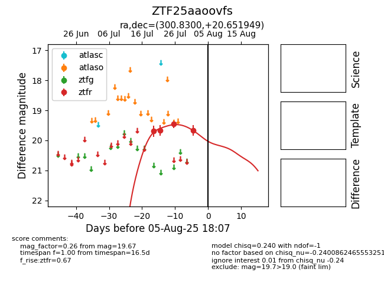

Target ZTF25aaoovfs at 2025-08-05 18:07, see:
FINK: fink-portal.org/ZTF25aaoovfs
Lasair: lasair-ztf.lsst.ac.uk/objects/ZTF25aaoovfs
ALeRCE: alerce.online/object/ZTF25aaoovfs
alt names
ZTF25aaoovfs (ztf,fink)
coordinates:
equatorial (ra, dec) = (300.8300,+20.65195)
galactic (l, b) = (59.5221,-5.51579)
photometry
last ztfr=19.67
4 ztfr detections
